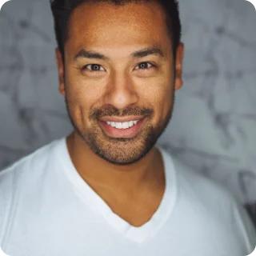

<div class="about-container">
    <div class="about-wrapper">
        <section class="intro">
            <div class="intro-wrapper">
                <div class="bg-image">
                    
                </div>
                <div class="content">
                    <p class="title">The story behind the brand</p>
                    <p class="subtitle">S & S Veteran Services, LLC offers personalized care to address drug addiction
                        and mental illness disorders among veterans in northern Virginia. <br><br>

                        We aim to help veterans recover, reintegrate into society successfully, and improve their mental
                        health and well-being. We provide virtual evidence-based treatments and support services.</p>
                </div>
            </div>
        </section>

        <section class="solution">
            <div class="solution-wrapper">
                <div class="left-section">
                    <p class="title">The Problem</p>
                    <p class="text">Wait times for Veterans in the cue to see Veterans Administration are an issue.
                        <br><br>

                        For the community-based clinicians, appointment wait times average around 43.9 days for mental
                        health and 41.9 days for all other specialties as of August 30, 2022. <br><br>

                        Substance abuse average wait time was 33 days, and patients had to abstain from substance or
                        alcohol use before admission to the Intensive Outpatient Program.
                    </p>
                </div>
                <div class="right-section">
                    <p class="title">The Solution</p>
                    <p class="text">S & S Veteran Services is a Virtual Counseling Service with qualified counselors who
                        will respond to inquiries within 24 hours. <br><br>

                        The Counselors are qualified to counsel both Mental Issues and Substance Abuse.
                        All team members served and dealt with these concerns during their time in the military.
                        <br><br>

                        We handled them before, and we will handle them now. Sessions are recorded and placed in secure
                        files for follow-on sessions for VA.
                    </p>
                </div>
            </div>
        </section>

        <section class="banner">
            
            <div class="banner-wrapper">
                <div class="content">
                    <p class="title">The team behind S&S</p>
                    <p class="subtitle">The business has a team with a proven track record of dealing with substance
                        abuse and mental health issues, including an Army spouse who has served as a substance abuse
                        counselor, a Command Master Chief with over 25 years of experience assisting Airmen dealing with
                        substance abuse, and a Colonel who has helped soldiers with substance abuse for over 30 years.
                    </p>
                </div>
            </div>
        </section>

        <section class="team">
            <div class="team-wrapper">
                <div class="team-card custom">
                    <div class="employee-img">
                        
                    </div>
                    <div class="content">
                        <p class="name">Stevenson Reed</p>
                        <p class="position">Chief Executive Officer</p>
                        <p class="desc">As a Brigade and Battalion Commander, I've had the privilege of working closely
                            with individuals dealing with anxiety, depression, trauma, grief, anger management, burnout,
                            compassion fatigue, and coping skills, all of which are profoundly intertwined with the
                            military experience. My commitment to respecting cultural beliefs and practices sets my
                            approach apart. I understand the importance of integrating these elements into holistic
                            treatment plans, ensuring my soldiers heal and thrive.
                            Supporting the military isn't just a choice for me; it's a calling, a mission, and a
                            lifelong commitment. My experiences as a leader in the Army are deeply rooted in my
                            dedication to positive social change within my community and across the state. Our military
                            community's resilience, strength, and unwavering spirit continue to inspire me even today.
                            <br>
                            I am proud that I served during my incredible journey, in support of our military and their
                            families, and I will continue to do so with passion and dedication.
                        </p>
                    </div>
                </div>
                <div class="team-card">
                    <div class="employee-img">
                        
                    </div>
                    <div class="content">
                        <p class="name">Sammy Ester Sr.</p>
                        <p class="position">Chief Operating Officer</p>
                        <p class="desc">As a Senior Enlisted Leader, I have worked directly with individuals and their
                            families dealing with anxiety, depression, trauma, grief, anger management, burnout,
                            compassion fatigue, and coping skills. My understanding and commitment to people, their
                            cultural beliefs and practices helped to set my approach to a lasting solution apart from
                            others. I understand the importance of integrating these elements into holistic treatment
                            plans that ensure the service members and veterans receive proper treatment, healing then
                            returned to service and normal activities. <br>
                            I am extremely proud and blessed to have served my nation in support of our military and
                            their families, and I will continue to do so with passion and dedication.</p>
                    </div>
                </div>
                <div class="team-card">
                    <div class="employee-img">
                        
                    </div>
                    <div class="content">
                        <p class="name">George Siragusa</p>
                        <p class="position">Business Advisor</p>
                        <p class="desc">My goal is to serve the less fortunate and ensure our communities grow
                            spiritually, mentally, and financially. The goal is to consistently learn daily and help
                            motivate others to pursue their dreams. The only difference between people is their mindset.
                            I am in pursuit of changing lives and making a difference in society.</p>
                    </div>
                </div>
                <div class="team-card">
                    <div class="employee-img">
                        
                    </div>
                    <div class="content">
                        <p class="name">Markus Reed</p>
                        <p class="position">Markus Reed</p>
                        <p class="desc">My name is Markus Reed. I am 35 years old with 3 beautiful kids. I am currently
                            working as a deployment health analyst from the Army. Also, I am working as a church clerk
                            at my father’s church. I am a business owner in the financial industry, where I help
                            families achieve financial freedom and help create ownership.
                            My goal is to serve the less fortunate and ensure our communities grow spiritually,
                            mentally, and financially. The goal is to consistently learn daily and help motivate others
                            to pursue their dreams. The only difference between people is their mindset. I am in pursuit
                            of changing lives and making a difference in society.</p>
                    </div>
                </div>
                <div class="team-card">
                    <div class="employee-img">
                        
                    </div>
                    <div class="content">
                        <p class="name">Yvonne Reed</p>
                        <p class="position">Substance Abuse Counselor</p>
                        <p class="desc">I want to work with Veteran populations at increased risk for using alcohol or
                            drugs in problematic ways. This is due to a variety of experiences linked directly to
                            military service. Military culture, exposure to stressors and trauma related to service or
                            combat, the development of mental health disorders, including post-traumatic stress disorder
                            (PTSD), and chronic pain or physical health issues can influence substance use and deep the
                            problems of alcohol and drug abuse run in veteran communities.</p>
                    </div>
                </div>
                <div class="team-card">
                    <div class="employee-img">
                        
                    </div>
                    <div class="content">
                        <p class="name">Cherrelle Reed</p>
                        <p class="position">Substance Abuse Counselor</p>
                        <p class="desc">My name is Cherrelle Reed. I have obtained a master’s in social work and a
                            master’s degree in criminal justice.
                            Currently, I am licensed as a license master social worker. I am the author of the book The
                            Trauma Within. I have been practicing in the field of social work for 8 years and the field
                            of human services for 9 years.
                            From my military-dependent life experience to my professional experience, I have learned we
                            all have trauma and pain that we have experienced in life. Trauma and pain will vary
                            depending on the situation, but the impact remains.</p>
                    </div>
                </div>
                <div class="team-card">
                    <div class="employee-img">
                        
                    </div>
                    <div class="content">
                        <p class="name">Dr. Matthew Stevens</p>
                        <p class="position">Substance Abuse Counselor</p>
                        <p class="desc">My counselor identity is complemented by 23+ years of service as a Navy
                            chaplain. I gained significant experience integrating personal belief systems into the care
                            I provided Sailors and Marines from diverse religious backgrounds. My wide range of
                            counseling expertise includes issues related to military service, caregiving fatigue, and
                            life transitions. <br>
                            I am most familiar with issues related to anxiety, depression, trauma, grief, anger
                            management, burnout, compassion fatigue, coping skills, and military service. I use an
                            integrative treatment approach that respects cultural beliefs and practices, integrating
                            them into holistic treatment plans that empower my clients to meet the challenges that keep
                            them from being their best selves. I track progress through client-reported outcomes to
                            ensure treatment plans achieve the results my clients most want to see.</p>
                    </div>
                </div>
            </div>
        </section>

        <section class="certifications">
            <div class="certifications-wrapper">
                <div class="content">
                    <div class="title">Our Certifications</div>
                    <div class="cert-wrapper">
                        
                        
                        
                        
                        
                        
                    </div>
                </div>
            </div>
        </section>

        <section class="faq">
            <div class="question-container">
                <div class="question-wrapper">
                    <div class="content">
                        <span class="badge">Frequently Asked Questions</span>
                        <p class="title">Your Queries, Answered</p>
                        <p class="text">We're here to provide you with all the information you need to make informed
                            decisions about your needs.</p>
                    </div>
                    <div class="faqs">
                        <div class="accordions" *ngFor="let faq of faqs">
                            <app-accordion [question]="faq.question" [answer]="faq.answer"></app-accordion>
                        </div>
                    </div>
                </div>
            </div>
        </section>

        <section class="support">
            <div class="support-container">
                <div class="support-wrapper">
                    <div class="content">
                        <p class="title">Reach Out for Compassionate Support and Guidance</p>
                        <button (click)="onButtonRedirect()" class="contact-us">Contact Us</button>
                    </div>
                </div>
            </div>
        </section>
    </div>
</div>